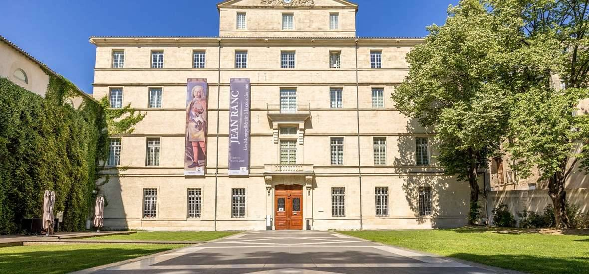

3 Jun
About the meeting
The 2022 Annual Meeting of the international Physics of Living Systems (iPoLS) network was held in Montpellier, France, from 31 May to 3 June 2022. With approximately 190 participants, it was one of the largest gatherings of the iPoLS community to date.
The scientific programme comprised sessions arranged by topic, two poster sessions, and several roundtable discussions. All oral presentations were selected from submitted abstracts, with priority given to early-career researchers. A dedicated POLS-T session addressed the teaching of biological physics at the high-school level.
Social events included a welcome reception in the historic Cour d'Honneur of the Faculté de Médecine and a conference dinner at the Musée Fabre with a private tour of the museum's collections.
Venue

Left: Cour d'Honneur, Faculté de Médecine (welcome reception) · Right: Musée Fabre (conference dinner)
Organisation
Organising committee
-
Catherine VillardCNRS – LIED & Université Paris Cité
-
Emmanuel MargeatCBS, CNRS – Montpellier
-
Florence LepageCNRS Montpellier
-
Marion BoutinINSERM Montpellier
Scientific committee
-
Herbie LevineNortheastern University, USA
-
Emmanuel MargeatCBS, CNRS – Montpellier
-
José OnuchicRice University, USA
-
Catherine VillardCNRS – Université Paris Cité
-
Jean-Charles WalterL2C, Montpellier
-
Aleksandra WalczakENS, Paris
Programme
The full scientific programme is available as a PDF document.
↓ Download programme (PDF)